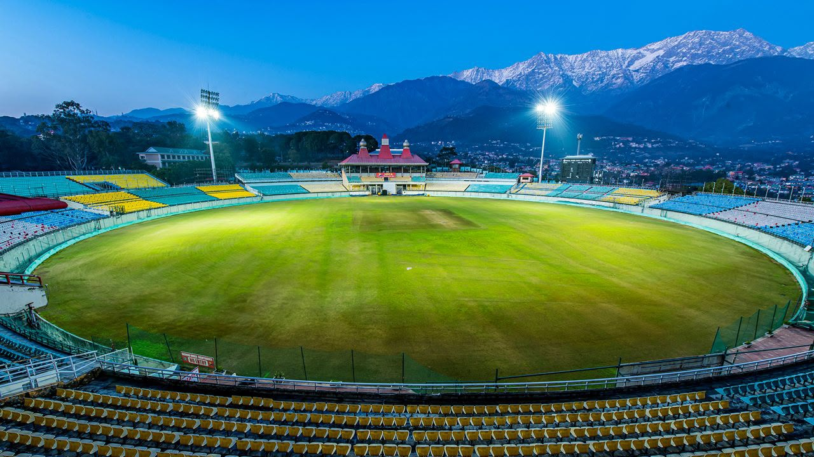
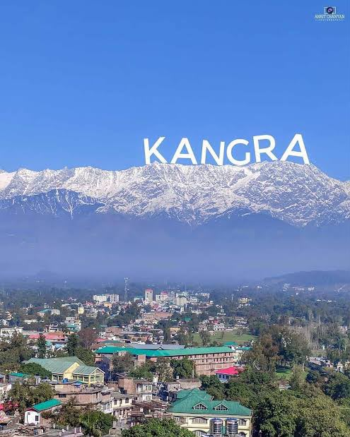

Himachal Pradesh is a stunning state in northern India nestled in the western Himalayas. It is famous for its snow-capped mountains, scenic hill stations, and vibrant local culture. Popular destinations like Shimla and Manali attract travelers from all over the world.

